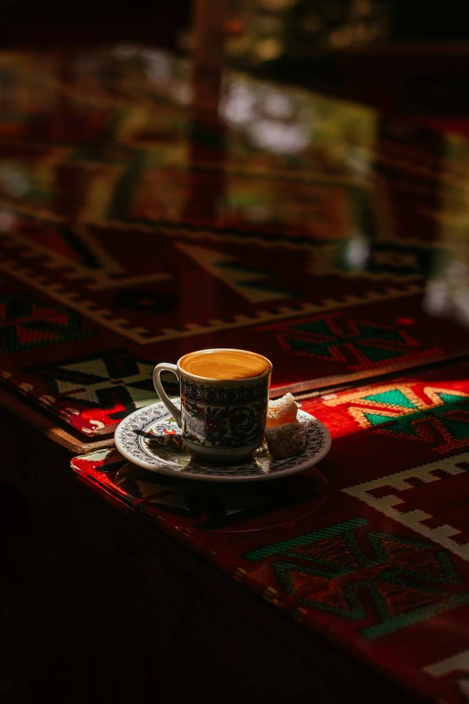
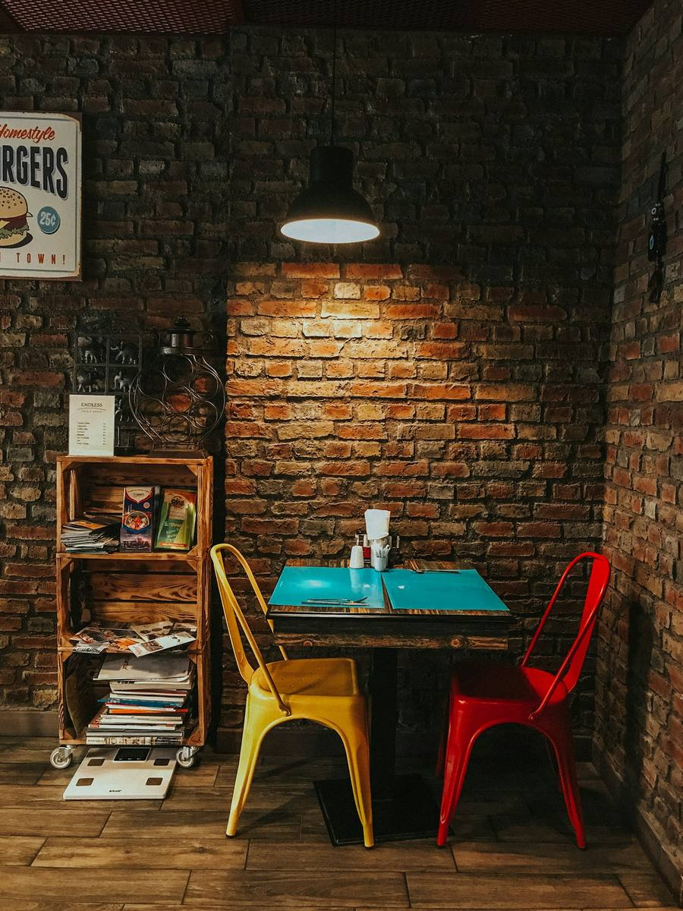
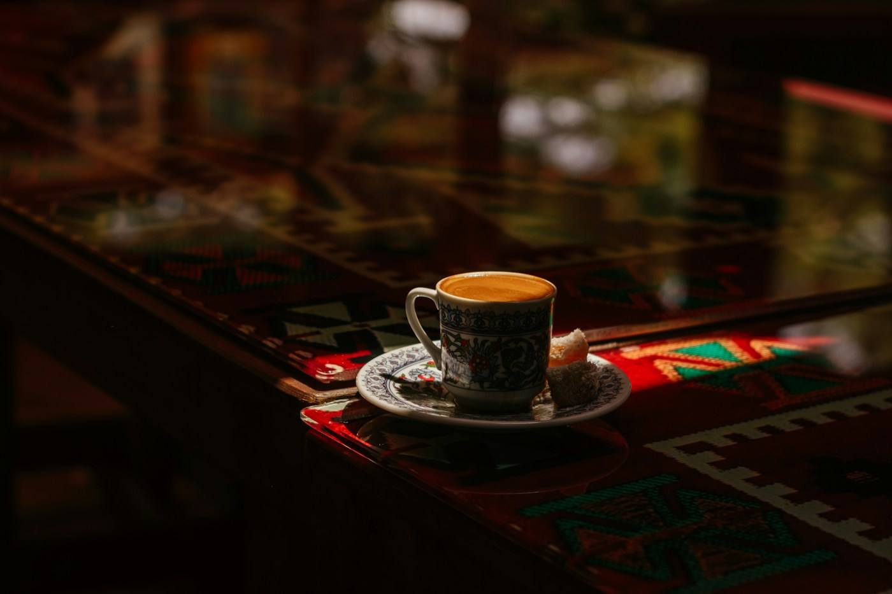

Mekândan
Gerçek sitede burada sizin mekânınızın ve ürünlerinizin fotoğrafları yer alır.


Saatler ve konum
Haritada ", " araması görünüyor. Gerçek sitede açık adresiniz burada yazar.

Sabah kahvaltısından akşam kahvesine. Menü, fiyatlar ve yol tarifi burada.
Gerçek sitede burada sizin mekânınızın ve ürünlerinizin fotoğrafları yer alır.


Haritada ", " araması görünüyor. Gerçek sitede açık adresiniz burada yazar.